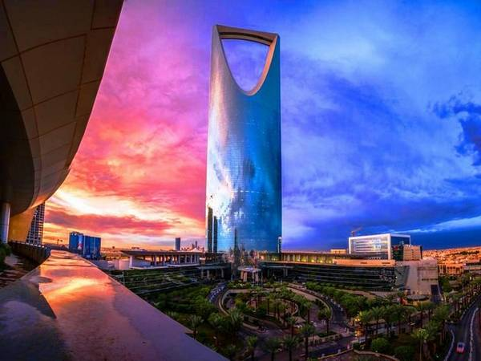

The Kingdom Commercial Market, located in the center, contains 201 places with a total leasable area of 38,543 square meters, occupying three floors. Among the major strategic tenants are Debenhams, which occupies an area of 8,364 square meters, and Saks Fifth Avenue, which covers 5,273 square meters. This market is designed to target young and well-to-do shoppers, and it contains stores for a number of the most famous international brands, while the third floor is designated for women only. The company's management estimates that about 230,000 people visit the market every week.

Kingdom Center (formerly Kingdom Tower) is a tower located in the city of Riyadh, the capital of the Kingdom of Saudi Arabia.
The establishment of the Kingdom Center was completed in 2002 AD, and it is located in the center of Riyadh on a plot of land purchased by Prince Al-Waleed bin Talal in 1990 AD. The Kingdom Center is one of the most prominent and famous cultural landmarks in the Kingdom of Saudi Arabia.